Candidate List 20260331 Previous Day Next Day Section 1: New Sources (age<1d) Cosmological Afterglow
Section 2: Old (1-5d) sources observed last night placeholder
Section 1: New Afterglow/FBOT Cands Last Night (1)
1. ZTF26aaquzaj (Afterglow?) [Back to Top] [Share] [Trigger Swift] [Fritz ] [Lasair ]RA, Dec: 186.23928, -26.0309 12h24m57.43s, -26d-1m-51.25sGalactic (l, b): 295.53152, 36.46004 ext(g-r) = 0.094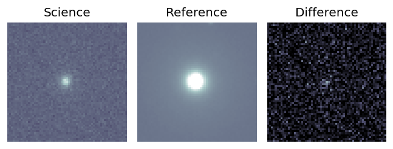
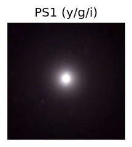
PS1: 1 source in 3 arcsec Closest: d = 1.03 arcsec photoz=0.03+/-0.00 peak abs mag = -18.96 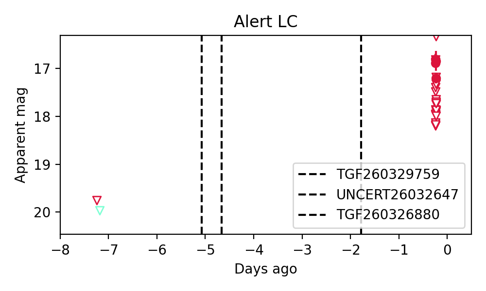
Section 2: Older Sources Observed Last Night (3)
0. ZTF26aapgvkd (FBOT?) [Back to Top] [Share] [Trigger Swift] [Fritz ] [Lasair ]RA, Dec: 231.2836, 13.34003 15h25m8.06s, 13d20m24.10sGalactic (l, b): 19.69478, 51.59515 ext(g-r) = 0.051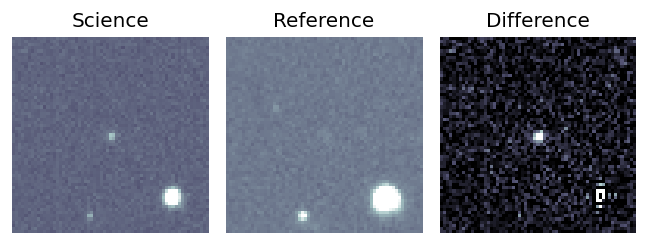
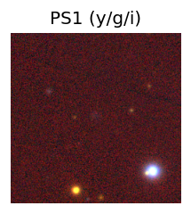
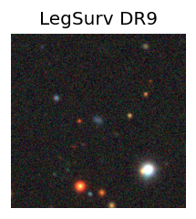
peak abs mag = -24.97 LegacySurvey: 1 sources in 3 arcsec Closest: d = 0.19 arcsec, 50.2 deg (east of north) photoz=0.12 (68% bounds 0.07, 0.39), type=EXP peak abs mag = -21.47 (68% bounds -20.36, -24.33) 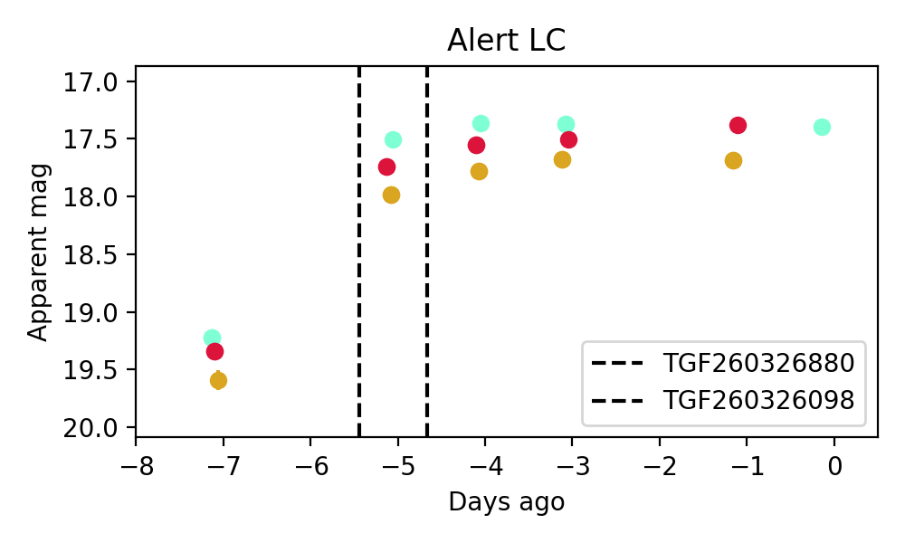
1. ZTF26aaqucsn (FBOT?) [Back to Top] [Share] [Trigger Swift] [Fritz ] [Lasair ]RA, Dec: 212.78127, 34.87192 14h11m7.51s, 34d52m18.91sGalactic (l, b): 62.27106, 71.29568 ext(g-r) = 0.018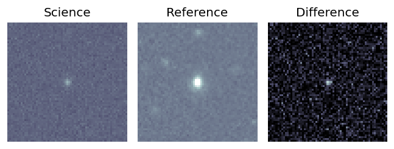
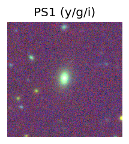
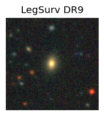
peak abs mag = -20.15 LegacySurvey: 1 sources in 3 arcsec Closest: d = 0.46 arcsec, 66.3 deg (east of north) photoz=0.17 (68% bounds 0.16, 0.18), type=SER peak abs mag = -20.21 (68% bounds -20.1, -20.32) 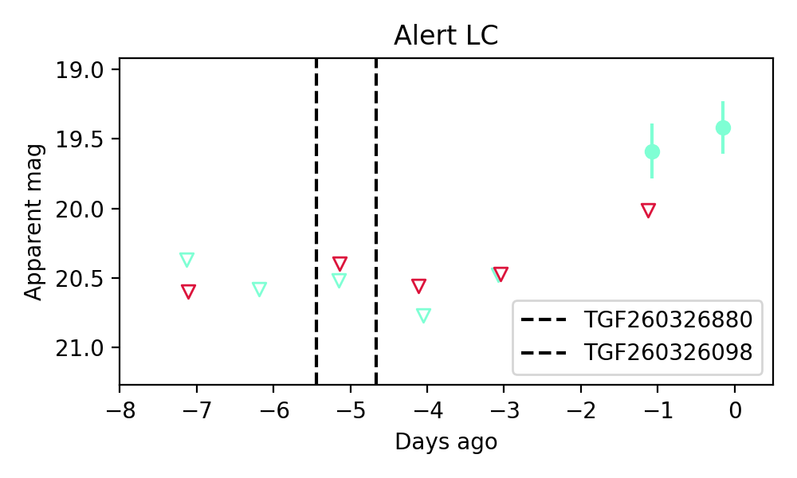
2. ZTF26aaqvmjr (FBOT?) [Back to Top] [Share] [Trigger Swift] [Fritz ] [Lasair ]RA, Dec: 245.95813, 13.20026 16h23m49.95s, 13d12m0.95sGalactic (l, b): 28.282, 38.63746 ext(g-r) = 0.059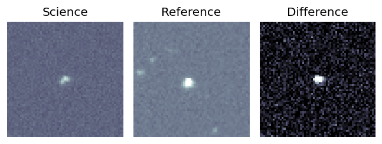
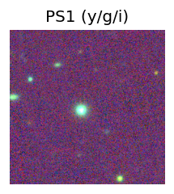
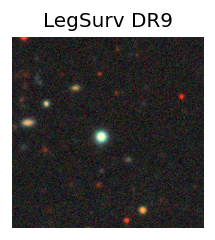
LegacySurvey: 1 sources in 3 arcsec Closest: d = 2.91 arcsec, 125.0 deg (east of north) photoz=0.19 (68% bounds 0.15, 0.22), type=PSF peak abs mag = -22.18 (68% bounds -21.74, -22.61) 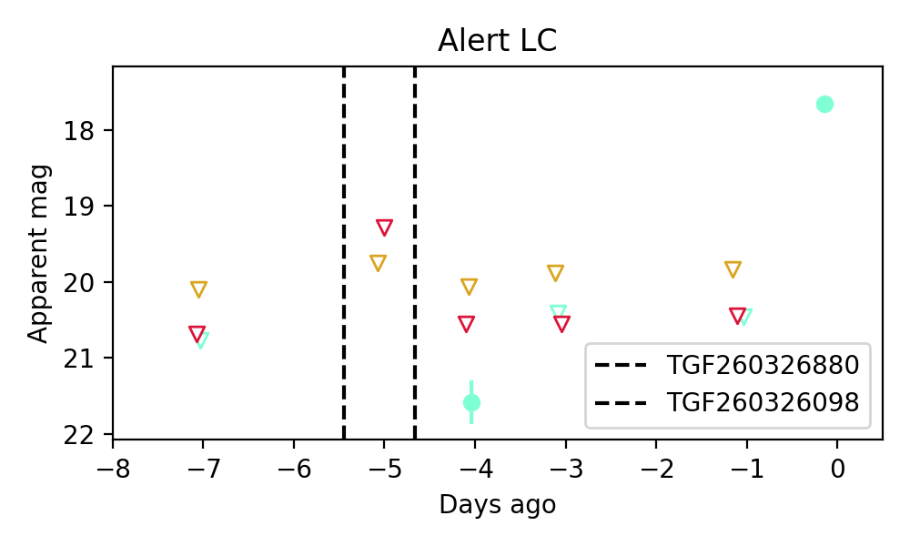